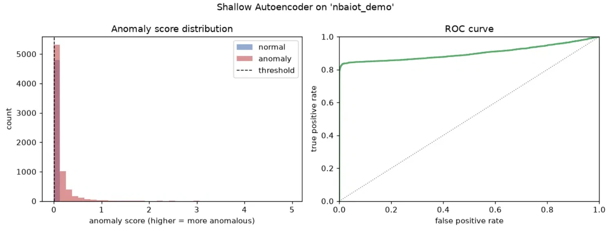
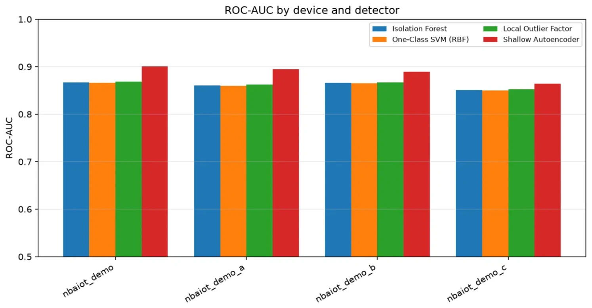
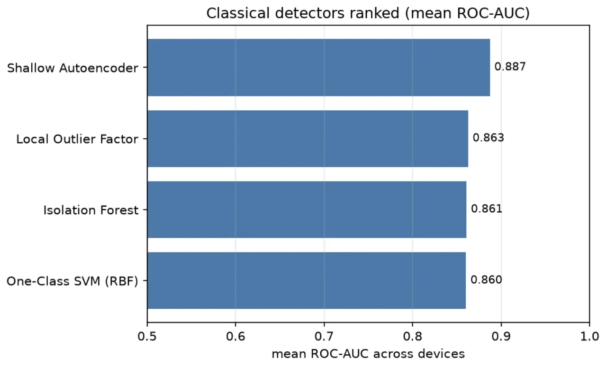
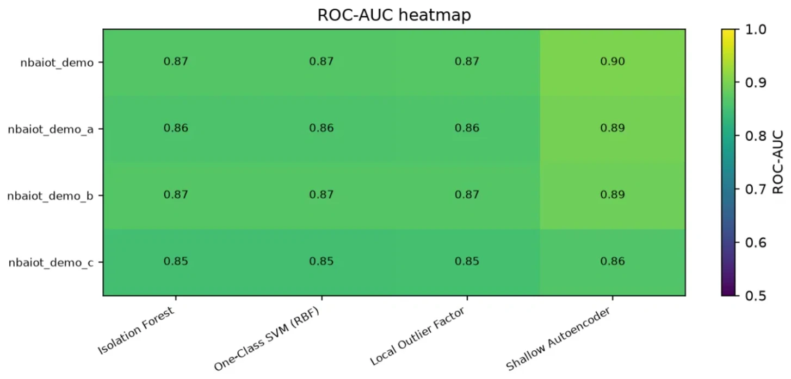

Can a quantum kernel tell an attack from ordinary traffic?
A live rerun of our benchmark. Four classical detectors and seven quantum kernel configurations are trained on benign rows only, then scored on the same held-out benign and attack rows. Change the inputs and every number on this page is recomputed.
Detector playground
Synthetic data is generated the way the research brief describes it, split into 80 benign training rows and 50 benign plus 50 attack test rows per seed, standardised and reduced with PCA to one component per qubit. Click any bar to focus the ROC curve, the score map and the kernel view on that detector.
Computing…
ROC curve
Score map
Anomaly score over the first two principal components.
Kernel matrices
First 40 benign training rows, colour scale fixed from 0 to 1.
Reported in the paper
The latency race
Median inference time per sample, measured in the paper on the same CPU with a warm-up pass discarded (Table R4). The race replays those measured rates: press start and watch each detector score the same batch of packets.
slower per sample than the RBF one-class SVM at 2 qubits, and about 5,200× at 4 qubits. These are desktop timings for relative comparison, not IoT device latency.
The classical execution run
Figures produced when the four classical detectors were first executed end to end through run_all.py and summarize_results.py (branch claude/classical-anomaly-detectors-1eudfd, commit d776ae5).




What is live, and what is reported
The page never edits a measured number. Live values are computed here from scratch; reported values are copied unchanged from the research brief.
Computed live
- Data from the brief's generators: 15-feature Gaussian shift (attacks shift about 60% of features by ±(3.5σ + e)), and a 10-D embedded ring with attacks at radius 1.6.
- Exact statevector simulation of Qiskit's ZZFeatureMap (linear entanglement), Z-only map and the trainable map, fidelity kernel |⟨Φ(x)|Φ(y)⟩|².
- One-class SVM (ν = 0.1 or 0.3) solved by SMO on each kernel; Isolation Forest (100 trees), LOF (20 neighbours) and a k→8→b→8→k autoencoder written in plain JavaScript.
The bandwidth-scaled kernel
- Section 12 of the brief lists bandwidth-scaled quantum kernels and replacing hard clipping as future work. This configuration tries exactly that: standardised PCA inputs times λ, no clipping, ZZ map with 2 layers.
- λ is picked from benign training rows only (median kernel value ≈ 0.5). Attack rows never tune it.
- It was not part of the paper's experiments, so it has no reported value and must be presented as exploratory.
Differences and limits
- Live runs use all 80 training rows as kernel references; the paper's sweep used 60. Random draws differ from the Python runs, so live values land near, not on, the reported ones.
- The noise model shifts and rescales every kernel entry by the same amount, so it cannot change the SVM's ranking. That matches the paper's finding that noise was not the bottleneck.
- All data is synthetic. Real N-BaIoT and TON-IoT results are still pending.